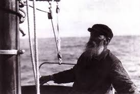

And old Peter Duck
looked down at her from the top of the quay and wished he was going too. 'Going
foreign she is, to blue water,’ he said to himself. And he thought of other
little schooners he had known, on the Newfoundland Banks and in the South Seas.
He thought of flying fish and porpoises racing each other and turning over in
the waves. He thought of the noise of the wind in the shrouds, and the glow of
the lamp on a moving compass card, and tall winds swaying across the stars at
night. And he wished he could go to sea once more and make another voyage
before it was too late.
I don’t think it’s possible to read this passage (from
chapter one of Arthur Ransome’s Peter Duck) without a sense of longing. I’d like you
to read it at my funeral, should you happen to be there. We printed it as
the frontispiece for my mother’s service sheet, together with a photo of her climbing
up the jetty at Eversons in Woodbridge in about 1947.
{kind=link}
The cruellest thing I ever did to Mum was to bring her inland. For many good reasons of course, just as Arthur Ransome’s character ‘Peter Duck’ has settled, apparently contentedly, on the inland waters of the Norfolk Broads, visiting his three daughters whenever the breeze sets fair in their direction, but privately compelled to come and sit on a bollard in Lowestoft Inner Harbour 'to look at the boats and the fishermen and to smell the fresh wind blowing in from the sea’.
 |
| Carl Herman Sehmel, Arthur Ransome's original 'Peter Duck' |
{kind=link}
Once Mum was stranded in agricultural Essex I had to stop
reading her John Masefield’s Sea Fever -- it was too painful. We cheered ourselves with Wordsworth's daffodils and shivered at Walter de la Mare’s The Listeners which she loved both for the traveller’s horse and the
reliability of the traveller himself, ‘“Tell them I came and no one answered /
That I kept my word,” he said’.
As music lasts longer than speech so poetry outlives prose. Try this with scansion and line endings and the secret of its power becomes clearer:
As music lasts longer than speech so poetry outlives prose. Try this with scansion and line endings and the secret of its power becomes clearer:
And
old Peter Duck looked down at her from the top of the quay
And
wished he was going too.
‘Going
foreign she is, to blue water,’ he said to himself.
And
he thought of other little schooners he had known,
On
the Newfoundland Banks and in the South Seas.
He
thought of flying fish and porpoises
Racing
each other and turning over in the waves.
He
thought of the noise of the wind in the shrouds,
And
the glow of the lamp on a moving compass card,
And
tall winds swaying across the stars at night.
And
he wished he could go to sea once more
And
make another voyage before it was too late.
On the morning of Mum's death my brother, Nick, who
insists (believably) that he never opens a book from one year’s end to the next
and scarcely looks at a newspaper, went immediately to her bookshelf and turned to a poem.
Iken Church
From
the river’s edge
The
sunlit tower invites you
To a
pilgrimage.
Larks
rise to meet you.
Round
the tower in flint and stone
Saints
wait to greet you.
The Need to Let Go
Today
the waves are leaden,
Surprised
by their own weight.
They
lift themselves
For
one last time
And
collapse on the beach.
After
so much travel, for ever
Holding
themselves in shape
In
all kinds of weather,
Their
only thought
The
need to let go.
The Gulls
Orford
disappears.
The
sky sits down on the river’s edge
And
sheens the tide-laid mud.
Sheep
graze the river wall,
And
little terns catch the eye
As
they plummet into water.
I am
sailing down river
On
the last of the ebb
And
the sea is waiting.
{kind=link}
So, Nick and his children read Ian Tait's poems in the service and Claudia Myatt followed them with her lovely ‘June’sSong’. Francis recited a psalm, from memory, confirming it as poetry (or song). There were more
words and hymns: a solitary flautist and the ever-evocative organ.
But when Nick and I took Mum’s
body to the crematorium – just the two of us (our other brother Ned was
unavoidably away) – we had no music, only poems and a prayer. The final poem I read to her before the curtains closed across the catafalque, the poem that had lasted
longest in her life, almost to the end, was Edward Lear's The Owl and the Pussycat
The voyage was over, the wind in the shrouds had stilled
And hand in hand, on the edge of the sand,
They danced by the light of the moon,
The moon,
The moon,
They danced by the light of the moon.
{kind=link}
Peter Duck off Everson's jetty